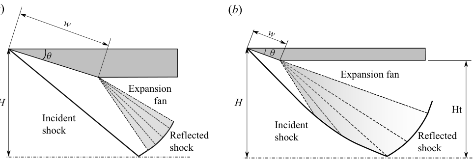
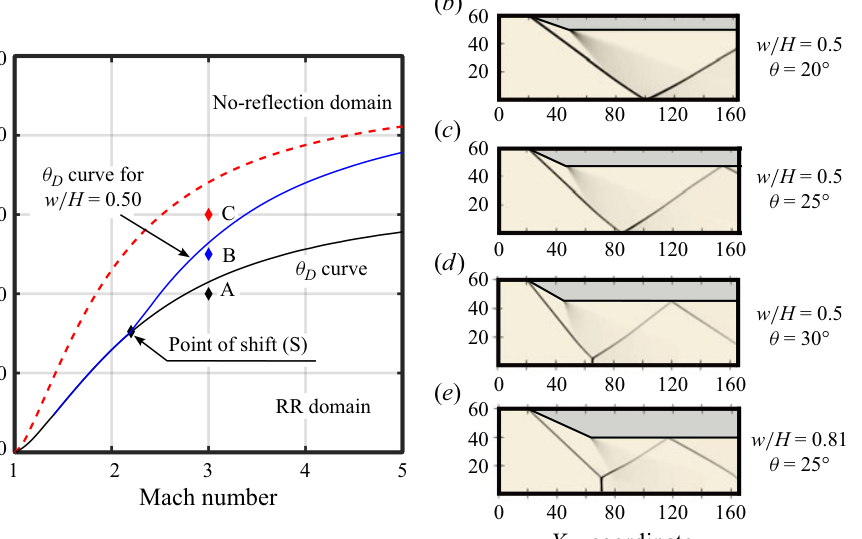
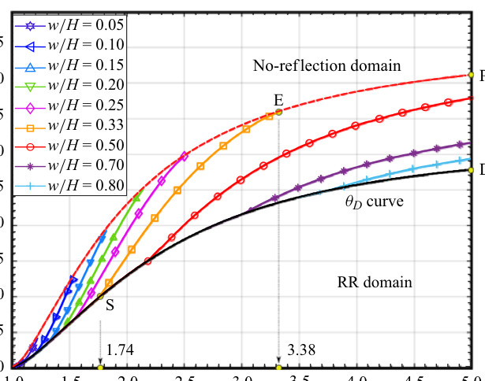
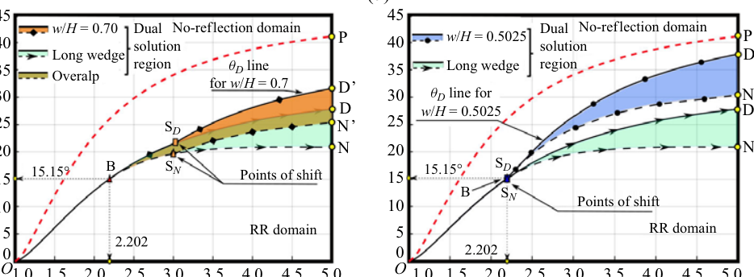

01中文摘要
长楔上规则反射—马赫反射（RR↔MR）转捩已有较多研究，但短楔因尾缘膨胀扇与入射激波及三波点/反射点相互作用，转捩预测十分困难；干扰程度取决于尾缘到对称线的距离Ht，而Ht由前缘距离H、楔角θ和楔长w几何组合决定。本文用特征线法建立完整波系干扰模型，预测不同来流马赫数下的激波曲率与反射结构；结果表明短楔转捩判据强烈依赖楔长，调节楔长甚至可在楔角达到无反射区前消除RR→MR转捩。文中绘制脱体判据与von Neumann判据的转捩线以研究双解域，并首次在短楔上实验验证反射结构；以w/H为参数将双解域偏移分为三类。
原始摘要（英文/原文）
Regular reflection (RR) to Mach reflection (MR) transitions (RR ↔ MR) on long wedges in steady supersonic flows have been well studied and documented. However, in a short wedge where the wedge length is small, the transition prediction becomes really challenging owing to the interaction of the expansion fan emanating from the trailing edge of the wedge with the incident shock and the triple/reflection point. The extent of this interaction depends on the distance between the wedge trailing edge and the symmetry line (Ht). This distance is a geometric combination of the distance of the wedge leading edge from the symmetry line (H), the wedge angle (θ) and the wedge length (w). In the present study, we used the method of characteristics to model the complete wave interactions which accurately predicted shock curvatures and the reflection configurations for all ranges of the incoming flow Mach number. In the case of short wedges, the transition criterion strongly depends on the wedge length, which can be so adjusted even to eliminate the RR → MR transitions till the wedge angle reaches the no-reflection domain. Transition lines for both the detachment criterion and von Neumann criterion are also drawn to investigate the dual solution domain, and the reflection configurations were verified experimentally for the first time on short wedges. By using proper input configuration parameter (w/H), various types of shifts in the dual solution domain for short wedges are studied and categorised into three types, namely Type I, Type II and Type III.
02阅读说明
类型：解析建模＋数值模拟＋实验验证（J. Fluid Mech. 2024, vol. 998, A38，26页，开放获取）。材料为26页全文与14个抓取图件；文本层较完整，式(2.1)–(2.12)、附录A、表1–表6可读，已用PDF第6–8页核对特征线与相容方程及Moeckel–Chisnell关系式。信息完整度较高：几何定义、来流Mach数、楔角、w/H、网格、风洞与纹影参数齐全；但比热比数值、来流总温总压与实验重复性未明确给出。页码按页脚998 A38-n标注，与bundle的PAGE编号一致。 文章类型：期刊
03一句话核心与三句话摘要
短楔尾缘膨胀扇使入射激波弯曲，RR↔MR转变线随w/H上移，对偶解域分三型。
- 长楔的RR↔MR转变已有共识，但短楔中尾缘膨胀扇与入射激波持续作用使反射点激波角改变，转变预测困难；此前模型忽略反射C+波，也缺少短楔实验验证。 AI概括
- 作者用以特征线法为核心的半解析模型（计入反射C+波）计算弯曲激波，与MC法和Bai(2023)模型对比，并用五阶WENO无粘CFD和M=2.48、2.88纹影实验验证，扫描M=1–5、w/H=0.05–0.8。 原文明确
- 短楔转变线向大楔角移动，同一状态下长楔为MR而短楔可为RR；w/H=0.05可完全消除纯MR；对偶解域按w/H分为Type I、Type II与Type III。 原文明确
04核心内容清单
| 要点 | 类型 | 重要性 | 原文依据 | 属性 |
|---|---|---|---|---|
| 短楔中尾缘膨胀扇与入射激波持续作用使激波弯曲、反射点激波角减小，RR↔MR转变不再只由M与θ决定，还取决于w/H。 | 核心机制 | A | p2，第1节，图2 | 原文明确 |
| 建立计入反射C+波的MoC半解析模型；MC法忽略一阶反射波，Bai(2023)只计C−波，三者构成精度递进。 | 方法 | A | p4–8，第2节；p22–25，附录A | 原文明确 |
| MoC与CFD的R/H及反射点激波角差异小于2%，与纹影实验在不确定度内一致。 | 验证 | A | p9–11，图6、图7、表2 | 原文明确 |
| 短楔使脱离准则线向大楔角移动，移位起点S由w/H决定；M=3、w/H=0.5时θ=20°、25°为RR，长楔25°为MR。 | 数值结果 | A | p13–14，图11 | 原文明确 |
| 实验直接验证移位：M=2.48、w/H=0.30时Q（22.69°）为RR而长楔R（20.29°）为MR；M=2.88、w/H=0.52时S为MR、T为RR。 | 实验结果 | A | p14–16，图12、图13 | 原文明确 |
| w/H=0.05时可完全消除纯MR，整个M–θ平面都出现规则反射；w/H=0.33的移位区间为M=1.74–3.38。 | 参数影响 | A | p15–16，图14 | 原文明确 |
| MoC与Bai(2023)的最大楔角偏差：脱离准则2.45%–5.31%，von Neumann准则2.66%–5.90%，偏差集中在无反射边界附近。 | 模型对比 | A | p12–13，表4、表5，图10 | 原文明确 |
| 对偶解域按w/H分为Type I（>0.5025）、Type II（0.5025–0.21）、Type III（<0.21，无对偶域）。 | 分类结论 | A | p18–20，图16、图17 | 原文明确 |
| von Neumann点随w/H减小向大楔角移动，其轨迹近似为过M=2.202的直线，左右两侧分别无/有对偶解域。 | 参数规律 | A | p20–21，图18 | 原文明确 |
| w/H=0.33、M=2.202时实际楔角20.18°对应的有效转角为15.15°，用激波极曲线验证了分叉点移动。 | 验证 | B | p20–21，图19 | 原文明确 |
| 反射点所需转角19.1°小于短楔的θmax=23.65°，故为RR；长楔θmax仅9.62°，故为MR。 | 机制证据 | B | p17，图15 | 原文明确 |
05引言：研究问题与领域缺口
p1–4（第1节）：超声速流经对称楔产生RR或MR；两者由尾缘到对称线的距离Ht的上下界（Htmax、Htmin）界定（图1）。长楔中尾缘膨胀扇不与入射激波相交（图2a），短楔中则与入射激波相交（图2b），使入射激波从首道膨胀特征线交点起连续弯曲、反射点激波角减小，故转变不仅取决于M与楔角θ，还取决于无量纲楔长w/H。已有工作：Li与Ben-Dor(1996,1997)的二阶多项式激波-膨胀扇模型与Htmax修正，Nel与Skews(2019)指出该模型只在弱干扰时准确；Vuillon等(1995)数值研究对偶解域并给出Httr；Hillier(2007)分析膨胀波与异族激波作用；Yao等(2013)报告上游膨胀波在M=2–3.5延迟、更高M加速RR↔MR转变；Bai(2023)首次解析研究同族尾缘膨胀扇与入射激波作用，以g=Ht/H为参数构造转变线，但只计C−波、忽略反射C+波，且未给出M<2的结果；Moeckel(1952)、Chisnell(1955)、Whitham(1958)的MC方法。缺口：需要计入C+波的更准确模型，并在短楔上做实验验证。目标：建立含C+波的MoC半解析模型，量化w/H对脱离准则与von Neumann准则转变线及对偶解域的影响，并分类。
06流动条件与几何构型
| 项目 | 数值/描述 | 依据 | 备注 |
|---|---|---|---|
| 流动假设 | 定常、二维平面、无粘、可压缩、完全气体；有旋（弯曲激波），熵仅沿流线不变 | p5–6，第2.1节 | 解析模型与CFD均为无粘 |
| 比热比 γ | 文中未明确给出数值（p18提及“for air”的M=2.202分叉点） | p18；p6 | |
| 分析覆盖 Mach 数 | 1–5 | p5，第1节末 | 转变线扫描范围 |
| 分析覆盖 w/H | 0.05–0.80 | p21，第6节；p15–16图14 | w/H为独立参数 |
| 楔角范围 | 自小角度直到无反射边界（θD线上方为无反射区） | p13，图11 | |
| 长楔 von Neumann 分叉点 | M=2.202，θw=15.15° | p18，图16 | M<2.202时长楔无von Neumann解 |
| CFD 工况 | M=3；短楔 w/H=0.5，θ=20°、25°、30°（A、B、C点）；长楔 w/H=0.81，θ=25° | p14，图11题注 | 用于验证脱离准则移位 |
| CFD 计算域与网格 | 200 mm（流向）×20 mm（法向）；入口段60 mm；650×100 单元 | p8，第3节；图5 | 无粘，未做网格无关性说明 |
| CFD 数值格式 | 有限体积；五阶WENO重构；HLLC近似Riemann求解器；四阶Runge–Kutta | p8，第3节 | |
| 实验工况1 | M=2.48；短楔 w/H=0.30，θ=28.07°（P）、22.69°（Q）；长楔 w/H=0.617，θ=20.29°（R） | p15，图12题注 | P为MR、Q为RR、R为MR |
| 实验工况2 | M=2.88；短楔 w/H=0.52，θ=28.07°（S）、22.69°（T） | p16，图13题注 | S为MR、T为RR |
| 风洞与喷管 | 二维型面收敛-扩张喷管，86 mm×150 mm；试验段展向150 mm；Ma由两个型面标定为2.48与2.88 | p9–10，第4.1节 | 喷管型线用MoC设计并作边界层修正 |
| 模型与安装 | 楔展向100 mm、长140 mm；15 mm厚垫片形成上下各15 mm间隙以避开边界层；顶部与底部壁面安装 | p10，第4.1节；图8 | |
| 测量 | Z型纹影，3000 fps，激光脉宽30 ns，100 mm f/2镜头；像素标定0.56±0.02 mm；稳定段总压0–20 bar、采样2 kHz | p10–11，第4.1–4.2节 | 激波角用高斯差分边缘检测 |
| 三模型对比工况 | M=4.0、θ=25°/30°/33°/35°；M=4.5、θ=37°；M=5.0、θ=40°；g=0.72或0.76 | p11，表3 | 对比Bai、MC、MoC的R/H与φ |
| MoC 步长 | 尾缘转角增量 dθ=0.03° | p25，表6及正文 | dθ由0.1°减至0.005°，R/H与φR变化小于0.03° |
07核心现象与关键参数
| 参数 | 定义 | 数值 | 关系/说明 | 依据 |
|---|---|---|---|---|
| H | 楔前缘到对称线的距离 | 文中未给出具体数值（用于无量纲化） | Ht由H、w、θ几何决定 | p2，图1、图2 |
| Ht | 楔尾缘到对称线的距离 | 由w、θ、H组合决定 | Ht=H−w·sinθ（几何关系，AI由图示理解） | p2，第1节 |
| Htmax、Htmin | 给定M与θ下MR与RR存在的尾缘高度上下界 | 文中未给解析式 | Ht介于两者之间时出现对偶解域 | p2，图1 |
| w/H | 无量纲楔长，决定膨胀扇与入射激波作用程度 | 0.05–0.80（扫描）；关键分界0.5025与0.21 | w/H越小，移位越大 | p2；p15–21 |
| g | 尾缘高度与入口高度之比 Ht/H | 0.70–0.92（图10、表4、表5） | Bai(2023)模型以此构造转变线 | p3，第1.1节；p12–13 |
| R/H | 反射点到楔尖的流向距离与H之比 | 0.8258–1.312（表2、表3） | 随M、θ、w/H与模型变化 | p11，表2、表3；图6 |
| φR（φ2） | 反射点处入射激波局部激波角 | 29.74°–38.66°（实验与MoC，表2）；34.14°–36.90°（表3） | 膨胀扇作用使其小于无干扰值 | p11，表2、表3 |
| θeff | 反射点处有效气流转角 | M=3、θw=30°、w/H=0.33时为19.1° | 小于楔角30°，因膨胀扇使气流部分转回水平 | p17，图15 |
| θD、θN | 脱离准则与von Neumann准则对应的转变楔角 | 随M与w/H变化，见图10、图14、图16–18 | θN<θD，两者之间为对偶解域 | p12–20 |
| von Neumann 点 B | θmax=0（声速后流）对应的分叉点 | 长楔 M=2.202、θ=15.15°；w/H=0.21时θ=25.93° | M<2.202时长楔无von Neumann解 | p18，p20，图16、图17 |
| 模型最大偏差 | MoC与Bai(2023)在无反射边界处的最大楔角差 | 脱离准则2.45%–5.31%；von Neumann准则2.66%–5.90% | 随楔角与Mach数增大而增大 | p12–13，表4、表5 |
| MoC-CFD偏差 | R/H与反射点激波角的相对差 | 小于2% | w/H=0.33、M=2.5–5.0、θ=20°–30° | p9–10，图6、图7 |
08方法与数据
解析（第2节，p5–8；附录A，p22–25）：MoC模型假设定常、二维平面、无粘、可压缩、有旋（因激波弯曲），熵仅沿流线不变；以尾缘点D发出的第一道膨胀特征线为初值线，用Prandtl–Meyer关系定D点参数，D的C−线与B点（入射激波与首道膨胀线交点）的C+线交于内点B1，过S点的流线C0提供第三个相容方程（表1）；激波点用局部压力比迭代，使激波后参数满足来自B1的C−相容方程，逐步增加尾缘转角得到离散弯曲激波，直至与对称线相交，交点给出φ2（激波角）与θeff（有效转角）。第二步用MC方法：把膨胀扇分为N道波，按PM关系逐道计算压力，再由等熵关系与斜激波关系求激波角，忽略反射一阶波，逐点推进到y=0。数值（第3节，p8–10）：二维无粘有限体积，五阶WENO重构，HLLC近似Riemann求解器，四阶Runge–Kutta时间推进；计算域长200 mm、高20 mm，入口段60 mm，650×100网格；与MoC叠加比较R/H和反射点激波角。实验（第4节，p9–11）：自建超声速风洞，二维型面收敛-扩张喷管86 mm×150 mm，试验段展向150 mm；楔展向100 mm、长140 mm，用15 mm厚垫片形成上下各15 mm间隙以避开边界层；两个型面分别标定到M=2.48与2.88；稳定段总压由调压阀控制、压阻传感器（0–20 bar、2 kHz）测量；Z型纹影，i-SPEED 726相机3000 fps，CAVILUX激光30 ns脉宽，像素标定0.56±0.02 mm；用高斯差分边缘检测求反射点激波角。附录A给出预测-校正算法（式A4–A22），表6表明步长dθ从0.1°减到0.005°时R/H与φR变化小于0.03°，取0.03°为最优步长。
| 项目 | 内容 | 依据 | 备注 |
|---|---|---|---|
| 研究类型 | 半解析建模（MoC）＋无粘CFD＋超声速风洞纹影实验 | p1摘要；p5–11 | 三种手段互相验证 |
| MoC 建模 | 以尾缘第一道膨胀特征线为初值线，内点由流线C0与C+/C−相容方程联立，激波点用压力比迭代并满足C−相容方程 | p5–6，第2.1节；p22–24，附录A | 计入反射C+波 |
| MC 方法 | 膨胀扇离散为N道波，按PM关系与等熵关系逐道求压力，再由斜激波关系求激波角，忽略一阶反射波，推进至y=0 | p6–8，第2.2节，式(2.1)–(2.12) | 计算量与MoC相当，精度较低 |
| CFD 求解器 | 二维无粘结构化有限体积；五阶WENO；HLLC；四阶RK；650×100网格；域200 mm×20 mm | p8，第3节；图5 | 未给网格无关性与收敛准则 |
| CFD 验证量 | 弯曲激波位置叠加图；R/H随M的变化；反射点激波角 | p9–10，图6、图7 | 最大差异小于2% |
| 风洞 | 自建暂冲式超声速风洞；二维型面C-D喷管86 mm×150 mm；两个型面标定M=2.48与2.88 | p9–10，第4.1节 | MoC设计喷管型线并作边界层修正 |
| 纹影与图像处理 | Z型纹影，3000 fps，30 ns激光；像素标定0.56±0.02 mm；高斯差分边缘检测求反射点激波角 | p10–11，第4.1–4.2节 | R/H由反射点像素横距换算 |
| 实验误差来源 | 下楔前缘偏移+0.3 mm（Mach stem不对称）；楔角误差±0.2°；R/H不确定度表中记为±0.56 | p15；p11表2 | ±0.56与像素标定同值，疑为笔误 |
| 转变准则 | RR→MR用脱离准则θD，MR→RR用von Neumann准则θN；两线之间为对偶解域 | p12，第5节；p18 | |
| MoC 步长收敛 | dθ由0.1°减至0.005°，R/H与φR变化小于0.03°，取0.03° | p25，表6 | 两组工况（M=2.5/θ=20°；M=3/θ=30°） |
| 模型对比 | 与Bai(2023)、MC法比较R/H与φR，并比较g线在无反射边界处的交点 | p12–13，表3–表5，图10 |
09核心推导与公式
把尾缘膨胀扇视为一族Prandtl–Meyer膨胀波，用特征线法逐步求解其与弯曲入射激波的作用：内点由三条特征线（流线、C+、C−）的相容方程联立，激波上的点用局部压力比迭代并使其满足来自内点的C−相容方程，从而得到弯曲激波与对称线交点处的激波角φR和有效转角θeff，再把该局部状态代入脱离/von Neumann准则得到短楔转变线；MC方法则用逐道膨胀波加斜激波关系作为快速近似。
关键假设
- 定常、二维平面、无粘、可压缩流动；完全气体
- 弯曲激波后有旋，熵仅沿流线不变（非等熵场）
- 尾缘膨胀扇总转角等于楔角θw，并离散为N道波（MC法）
- MC法忽略膨胀扇与激波作用产生的一阶反射波；一阶近似误差随楔角与Mach数增大，Mach数影响更大
- MoC模型不含MR解，仅适用于规则反射（RR）
- 入射来流水平，楔肩部与对称线平行以使尾缘后气流恢复水平
推导过程
以局部激波角φ与来流Mach数M0求波后压力比、偏转角与波后Mach数，作为膨胀扇作用的初值。
把总转角θw均分为N份，每道波对应增量Δν；由累积Prandtl–Meyer角求该道波后的Mach数。
由波前Mach数求压力比，再由Prandtl–Meyer角差更新当地气流偏转角。
把膨胀波后的压力当作激波作用点的压力，用斜激波压力比关系反解局部激波角，从而得到激波因膨胀扇作用而减小的角度。
由相邻激波点连线斜率、Mach线与当地流线方向联立，逐点求激波与膨胀波的交点，直到y坐标为零，得到整条弯曲激波。
用流线、右行与左行Mach线的斜率和相容方程（表1）联立求内点B1；以Euler预测-校正迭代提高精度，流线上参数由线性插值给出。
对弯曲激波上的离散点，先假定压力比（取B点压力为初猜），由斜激波关系求激波角与转角，再检验来自内点B1的C−相容方程，迭代至收敛；逐步增加尾缘转角并推进，直到激波与对称线相交，线性插值得到交点处的φR与θeff。
对给定M与θw，改变w/H得到不同的φR与θeff；当反射点状态恰好满足脱离条件（或von Neumann条件，即下游为声速）时对应的楔角即为短楔的θD（或θN）。与长楔（无膨胀扇作用）结果对比即得转变线移动量，并据此划分对偶解域类型。
适用边界：模型限于定常、二维平面、无粘、完全气体与规则反射；MoC不含MR解，不能给出Mach stem高度或滑移线结构；MC法忽略一阶反射波，误差随楔角与Mach数增大（Mach数影响更大）；附录A算法以线性插值连接离散点，激波与对称线交点靠相邻点插值；实验仅覆盖M=2.48与2.88、少量楔角，R/H的纹影不确定度较大；比热比数值与来流总温总压未明确。
10结果：主要发现与关键证据
与Bai(2023)对比（第5.1节，p12–13，图10，表4、表5）：两模型构造的g线形状一致，但在无反射边界附近存在系统偏差，MoC给出的反射点激波角更高；最大楔角误差按脱离准则为2.45%–5.31%，按von Neumann准则为2.66%–5.90%。MoC与CFD对比（第3节，p9–10，图6、图7）：w/H=0.33时R/H及反射点激波角的差异小于2%。实验对比（表2，p11）：M=2.48、θw=22.69°、w/H=0.30时φ为37.27°（MoC）对38.66±0.5°（实验），R/H为1.05对1.12±0.56；M=2.88、θw=28.07°时35.50°对35.54±0.5°，R/H为1.02对0.958±0.56；M=2.88、θw=22.69°时32.08°对29.74±0.5°，R/H为1.26对1.312±0.56。三种模型对比（表3，p11）：M=4.0、θ=35°、g=0.76时R/H为Bai 0.8613、MC 0.9101、MoC 0.8934，φ为36.7427°、35.1726°、36.7067°。转变线（第5.2节，p13–17，图11–15）：短楔使脱离准则线向大楔角移动（转变延迟），起点S由w/H决定，w/H越小移动越大；M=3、w/H=0.5时CFD中θ=20°（A）、25°（B）为RR，30°（C）为MR，而长楔（w/H=0.81）在25°（B）为MR，直接证明移位；实验M=2.48、w/H=0.30时P（28.07°）为MR、Q（22.69°）为RR，长楔R（w/H=0.617、20.29°）为MR；M=2.88、w/H=0.52时S（28.07°）为MR、T（22.69°）为RR。图14给出w/H=0.05–0.80的转变线族，w/H=0.05可完全消除纯MR；w/H=0.33的移位起点S为M=1.74、θ=9.6°，终点E为M=3.38、θ=36.3°。对偶解域（第5.3节，p17–21，图16–19）：按移位与von Neumann点B（M=2.202、θ=15.15°）的相对位置分为Type I（w/H>0.5025）、Type II（0.5025≥w/H>0.21）与Type III（w/H<0.21，无对偶解域）；w/H=0.7时SD为M=3.03、θw=21.66°，SN为M=3、θw=19.66°；w/H=0.21时SD为M=1.44、θ=5.3°，B'''为M=2.202、θ=25.93°；分叉点轨迹近似过M=2.202的直线（图18）；M=2.202、w/H=0.33时实际楔角20.18°对应的有效转角为15.15°（图19）。
| 发现 | 证据 | 证据类型 | 强度 | 位置 | 属性 |
|---|---|---|---|---|---|
| 短楔使脱离准则转变线向大楔角方向移动，移位起点S由w/H决定，w/H越小移动越大。 | 图11（w/H=0.5）、图14（w/H=0.05–0.80）；w/H=0.33时S在M=1.74、θ=9.6°，移位终点E在M=3.38、θ=36.3° | 解析结果 | 强 | p13–16，图11、图14 | 原文明确 |
| CFD直接证实移位：M=3、w/H=0.5时θ=20°与25°为RR、30°为MR，而长楔（w/H=0.81）在25°为MR。 | 图11(b)–(e)数值纹影：A、B为RR，C为MR；长楔B点为MR | 数值结果 | 强 | p14，图11 | 原文明确 |
| 纹影实验首次在短楔上验证转变线：同一Mach数下长楔为MR的状态，在更短楔上变为RR。 | M=2.48、w/H=0.30：P（28.07°）MR、Q（22.69°）RR，长楔R（20.29°）MR；M=2.88、w/H=0.52：S（28.07°）MR、T（22.69°）RR | 实验结果 | 强 | p15–16，图12、图13 | 原文明确 |
| w/H=0.05时可完全消除纯Mach反射，使整个M–θ平面都出现规则反射；w/H>0.5时移位起点S在M>2，w/H<0.5时S在M≤2附近。 | 图14转变线族；作者据此讨论可用w/H选择RR区域或控制MR尺寸 | 解析结果 | 中 | p15–16，图14 | 原文明确 |
| 计入反射C+波后，反射点附近激波斜率与激波角比Bai(2023)更高，转变发生更早；两模型最大楔角偏差2.45%–5.90%，集中在无反射边界附近。 | 表4（脱离准则2.45%–5.31%）、表5（von Neumann准则2.66%–5.90%）、图10 | 模型对比 | 强 | p12–13，表4、表5，图10 | 原文明确 |
| 短楔对偶解域按w/H分为三型：Type I（>0.5025）、Type II（0.5025–0.21）、Type III（<0.21，无对偶域）。 | 图16、图17：w/H=0.7时SD在M=3.03、θ=21.66°，SN在M=3、θ=19.66°；w/H=0.21时SD在M=1.44、θ=5.3°；Type III无对偶域 | 解析分类 | 强 | p18–20，图16、图17 | 原文明确 |
| von Neumann点随w/H减小向大楔角移动，其轨迹近似为过M=2.202的直线，可作为有/无对偶解域的分界。 | 图18；w/H=0.33、M=2.202时实际楔角20.18°对应有效15.15°（图19激波极曲线） | 参数规律 | 中 | p20–21，图18、图19 | 原文明确 |
| MoC模型与CFD的R/H和反射点激波角差异小于2%，与纹影实验在给定不确定度内一致。 | 图6、图7；表2：φMoC=37.27°/35.50°/32.08°对实验38.66±0.5°/35.54±0.5°/29.74±0.5°，R/H为1.05/1.02/1.26对1.12±0.56/0.958±0.56/1.312±0.56 | 验证 | 中 | p9–11，图6、图7、表2 | 原文明确 |
11机制解释与论证链
作者给出的机制为：尾缘膨胀扇使入射激波逐渐减弱，反射点处激波角φR小于无干扰值，波后Mach数因此升高（M=3、θw=30°、w/H=0.33时由长楔的1.41升到短楔的2.04，p17图15），对应的最大可转角度θmax由9.62°增至23.65°；同时膨胀扇已把部分气流转回水平，使反射点所需转角降至19.1°，低于23.65°，于是维持规则反射。当w/H进一步减小，膨胀扇作用更早、更强，θmax更大、所需转角更小，脱离准则线便向更大楔角移动，直到与无反射线相交。反过来，对偶解域的位置取决于θD线与θN线相对von Neumann点B的移位次序：w/H>0.5025时两线在B点之后才移位（Type I）；0.5025≥w/H>0.21时θD先在B点之前移位、θN后移，对偶域被压缩并向无反射区靠拢（Type II）；w/H<0.21时B点本身移到无反射线上，对偶域消失（Type III）。以上为【AI概括】，其数据依据见p17–20与图15–18。
12讨论：结论、贡献与局限
作者的解释链是：尾缘膨胀扇削弱入射激波，使反射点处激波角减小，激波后Mach数升高（图15中M=3、θw=30°、w/H=0.33时短楔为2.04，长楔为1.41），对应的最大转角θmax由9.62°增到23.65°，而反射点所需转角因膨胀扇已把气流部分转回水平而降至19.1°（小于23.65°），故在长楔本应为MR的状态下短楔仍保持RR；因此脱离准则线整体向大楔角移动（p16–17）。w/H越小，膨胀扇与激波作用越早、越强，移位起点S越靠近低Mach数（图14：w/H>0.5时S在M>2，w/H<0.5时S在M≤2附近），因为低Mach数下斜激波角更大、激波与首道膨胀线的交点只在很小的楔长下才出现（p16–17）。对偶解域方面，w/H减小使θD、θN线一起移动，两者与von Neumann点的相对次序改变，从而出现三类结构；Type II后期对偶域被挤压到无反射线附近，w/H<0.21时von Neumann点与无反射线相交，对偶域消失，只剩纯RR与极小的纯MR区（p18–20）。作者还指出MoC与Bai差异源于反射C+波使反射点附近激波斜率更大、激波角更高，故本文预测的转变更早（p12）。局限：解析模型不含MR解、只适用于RR；实验只有两个Mach数、少量楔角组合，纹影R/H不确定度较大；Mach stem的不对称分别归因于下楔前缘0.3 mm偏移与±0.2°楔角误差（p15）。
作者结论
作者结论（p21–22，第6节）：用解析、数值与实验三种方法研究了短楔上的激波反射；尾缘膨胀扇与入射激波作用使激波弯曲，反射/三叉点处激波角改变，从而转变线移动；w/H=0.05–0.8的转变线族可用于查询任意M（1–5）下某w/H的脱离/von Neumann转变角，并可通过选择w/H控制MR的出现与尺寸；随膨胀扇作用增强，对偶解域位置改变，按移动模式分为Type I、Type II、Type III；对偶域随w/H减小最终消失，从而可控制MR↔RR迟滞过程。作者同时指出Type I–III的流场结构与行为仍需进一步研究（p21）。
主要贡献
- 建立计入反射C+波的MoC半解析模型，能预测短楔入射激波曲率与反射点激波角，并给出完整算法与步长收敛性。
- 首次在短楔上给出脱离准则与von Neumann准则的转变线族（M=1–5、w/H=0.05–0.8），量化w/H对RR↔MR转变的控制作用。
- 首次用纹影实验在短楔上验证转变线移位，并提供R/H与反射点激波角的实验数据。
- 提出对偶解域的Type I/II/III分类及von Neumann点轨迹，指出w/H可消除对偶域、控制MR↔RR迟滞。
局限与未解决问题
作者承认：MoC模型不含MR解、只适用于RR；MC法忽略一阶反射波；Type I–III的详细流场需进一步研究；实验存在下楔前缘0.3 mm偏移与±0.2°楔角误差。AI识别：仅二维平面对称楔、无粘、完全气体，未考虑粘性、边界层、侧壁与三元效应；实验只覆盖M=2.48与2.88，且R/H的纹影不确定度（表中±0.56）与像素标定同值，疑为笔误，实际判别力有限；CFD仅650×100网格且未给网格无关性与收敛准则；比热比与来流总温总压未明确；转变线判定依赖单帧纹影与单一 criterion 组合。
13对高速流动与工程的意义
在高速流动工程上，短楔/短压缩面（如进气道唇口、压缩拐角、隔离器前缘）的RR/MR构型直接决定激波损失、总压恢复与壁面载荷；本文给出的w/H–M–θ转变图可用于选型：通过缩短楔长把MR推后甚至消除，或把MR限制在指定区域，并利用对偶域消失抑制MR↔RR迟滞（此工程含义为AI推断，文中仅指出可控制MR的出现、尺寸与迟滞）。方法上，把计入C+波的特征线模型与MC近似、CFD、纹影结合，可作为同类“激波-膨胀扇干涉”问题的验证范式；但不能直接给出粘性干扰、分离与三维效应下的转变位置。
14核心图件




15可引用原文素材
| 原文短句 | 可支持的观点 | 位置 | 使用建议 |
|---|---|---|---|
| “the transition prediction becomes really challenging” | 短楔转变预测的困难 | p1，摘要 | 研究背景引用 |
| “the incident shock angle in short wedges decreases” | 膨胀扇使入射激波角减小 | p2，第1节 | 机制描述 |
| “the transition criterion strongly depends on the wedge length” | w/H是转变的关键参数 | p1，摘要 | 核心结论引用 |
| “we can even eliminate the pure Mach reflection completely” | w/H=0.05可消除纯MR | p15，第5.2节 | 工程控制含义 |
| “is negligible and thus disregarded in the model” | MC法忽略一阶反射波的假设 | p8，第2.2节 | 说明MC近似 |
| “The analytical model developed does not consider the possibility of Mach reflection” | MoC模型只适用于RR | p6，第2.1.2节 | 适用边界引用 |
| “as the w/H value decreases from 0.7, the point of shifts SD and SN moves” | 移位点随w/H减小向von Neumann点靠拢 | p19，第5.3.1节 | Type I/II分界依据 |
| “the dual solution domain diminishes and shifts towards the no-reflection domain” | Type II对偶域收缩 | p20，第5.3.2节 | 分类特征 |
16最终核验
| 核验项 | 结论 |
|---|---|
| 仅基于全文 | 是。全部内容来自26页bundle文本、图注及PDF第6–8页公式核对；未引入外部知识。 |
| A 级要点有依据 | 是。A级要点均可回查图10–图19、表2–表5与式(2.1)–(2.12)，数值逐项对应。 |
| 属性标注 | 是。three_sentence、core_points、findings均标注属性；机制整段标为AI概括并给出页码依据。 |
| 覆盖范围 | 是。bundle共1492行已全部读完（分两段至EOF）；IMRaD四节、conditions 16项、key_parameters 12项、methods 11项、findings 8条、quotes 8条、figures 4幅。 |
| 无编造 | 是。页码、图号、表号与数值均取自原文；未给出的量（γ、总温总压、H具体值）写“文中未明确”。Ht=H−w·sinθ 仅作为几何理解的AI标注，未当作原文公式。 |
需回原文确认
- 表2中R/H实验误差写为±0.56，与像素标定0.56 mm同值，疑为笔误（应为±0.056或百分比），需回原文或勘误确认。
- 比热比数值未在正文明确给出，M=2.202与15.15°分叉点是否取γ=1.4需确认。
- 图11(e)长楔取w/H=0.81而非0.5，其“无干扰”判据（膨胀扇是否完全不触及激波）未量化。
- Type II与Type III的分界w/H=0.21由“very close”判定，数值误差对分类边界的影响未评估。
- CFD为650×100网格且未给网格无关性与收敛标准，2%偏差是否含离散误差需确认。
- 实验仅两个Mach数、三个楔角组合，RR/MR判定基于单帧纹影，重复性未给出。
- MoC模型不含MR解，靠近转变线时以RR解外推判据的适用性需进一步验证。
17关联文献
依据标签、板块、构型与作者脉络自动关联，可据此追踪同一问题的前序与后续工作。
18引用格式
选择期刊风格后复制；出处保留原刊名。BibTeX 可直接用于 LaTeX。
引用格式
Baby, V. Y., Paramanantham, V. & Rajesh, G. 2024 Regular reflection to Mach reflection (RR–MR) transition in short wedges. Journal of Fluid Mechanics 998, A38. https://doi.org/10.1017/jfm.2024.826
PDF上传 PDF 并更新本页
本页缺少全文、摘要或图件时，可在浏览器本地补入 PDF。解析完全在本机完成，不上传网络；完成后会更新本页的 PDF 打开链接、原摘要、IMRaD 机器抽取、关键句与含图页面。复杂的公式语义与中文深度解读仍以原文和既有精读记录为准。